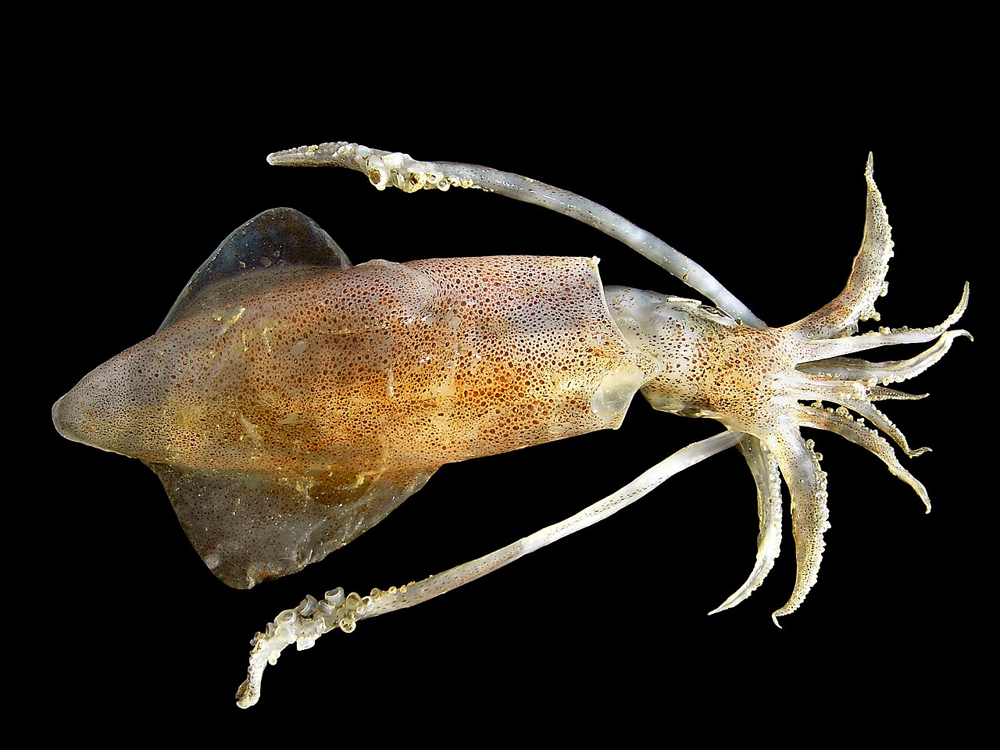
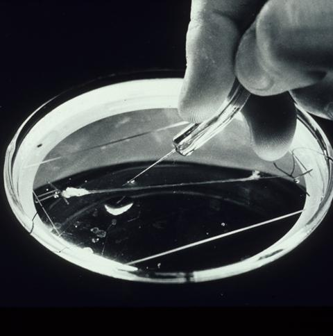

神经冲动的产生和传导（上）：兴奋在神经纤维上的传导
本期导读
（上）兴奋在神经纤维上的传导

视频原话 · 导读3 句
- 同学们好！这节课梳理人教版选择性必修一第二章第三节的前半部分——兴奋在神经纤维上的传导。9.6s
- 这是神经调节的核心难点：静息电位和动作电位的离子机制、膜电位曲线、电表偏转，几乎年年都考。9.9s
- 我们按八个考点梳理，每个考点都讲清楚怎么考、怎么做。5.5s
静息电位01#
静息电位：外正内负
① 膜内K⁺浓度高于膜外
② 静息时膜主要对K⁺有通透性
③ K⁺外流 → 膜外阳离子多
② 静息时膜主要对K⁺有通透性
③ K⁺外流 → 膜外阳离子多

易错
K⁺外流：顺浓度梯度、借助通道蛋白 → 协助扩散，不消耗能量
视频原话4 句
- 考点一，静息电位。神经纤维未受刺激时，膜两侧的电位表现为外正内负。8.2s
- 原因是：膜内K+浓度比膜外高，静息时膜主要对K+有通透性，K+外流，使膜外阳离子浓度高于膜内。11.2s
- 科学家正是用枪乌贼的巨大轴突，把微电极插进膜内，测出了这个电位。6.9s
- 易错：K+外流是顺浓度梯度、借助通道蛋白进行的，属于协助扩散，不消耗能量。8.7s
动作电位02#
① 受到刺激，膜对Na⁺的通透性增加
② Na⁺迅速内流
② Na⁺迅速内流
动作电位：外负内正
该部位处于兴奋状态
静息钾外流
兴奋钠内流
兴奋钠内流
易错
Na⁺内流：顺浓度梯度、借助通道蛋白 → 协助扩散
视频原话3 句
- 考点二，动作电位。神经纤维某一部位受到刺激时，膜对Na+的通透性增加，Na+迅速内流。9.8s
- 于是这个部位的膜电位变为外负内正，形成动作电位，这个部位就处于兴奋状态。8.0s
- 易错：Na+内流同样是顺浓度梯度、借助通道蛋白的协助扩散。记住口诀：静息钾外流，兴奋钠内流。11.0s
局部电流与传导方向03#
膜外：未兴奋部位 → 兴奋部位
膜内：兴奋部位 → 未兴奋部位
局部电流使相邻部位兴奋
考法
传导方向与膜内电流方向一致，与膜外电流方向相反
视频原话4 句
- 考点三，局部电流。兴奋部位外负内正，相邻的未兴奋部位仍是外正内负，两者之间有电位差，电荷移动形成局部电流。12.2s
- 在膜外，局部电流由未兴奋部位流向兴奋部位；在膜内，由兴奋部位流向未兴奋部位。8.7s
- 局部电流刺激相邻的未兴奋部位，使它也产生动作电位，兴奋就这样一段一段向前传导。8.6s
- 考法：兴奋的传导方向与膜内电流方向一致，与膜外电流方向相反。6.9s
双向传导与单向传导04#
易错
离体神经纤维：双向传导
反射活动中：单向传导
反射活动中：单向传导
视频原话2 句
- 考点四，传导方向。在离体的神经纤维上，刺激中间某一点，兴奋同时向两侧传导，是双向的。9.9s
- 易错：在生物体内的反射活动中，兴奋只能从感受器一端传来，所以在神经纤维上是单向传导的。9.5s
膜电位变化曲线05#
| 段 | 变化 | 原因 |
|---|---|---|
| ab | 静息电位（外正内负） | K+外流（协助扩散） |
| bc | 去极化 → 外负内正 | Na+内流（协助扩散） |
| cd | 恢复为外正内负 | K+外流（协助扩散） |
| de | 恢复离子分布 | 钠钾泵：泵出3Na+、泵入2K+（主动运输） |
考法
Na⁺内流、K⁺外流 → 协助扩散；钠钾泵 → 主动运输；峰值高低取决于Na⁺内流的量
视频原话6 句
- 考点五，膜电位变化曲线。电极一个在膜内、一个在膜外，纵轴是膜内相对于膜外的电位。9.0s
- ab段是静息电位，约−70 mV，由K+外流维持。5.9s
- bc段，受到刺激后Na+通道开放，Na+大量内流，膜电位迅速上升到峰值，变成外负内正。9.9s
- cd段，Na+通道关闭，K+通道开放，K+外流，膜电位恢复为外正内负。8.7s
- {de段|brown}，{钠钾泵|brown}消耗ATP，泵出3个Na+、泵入2个K+，恢复膜内外的离子分布，属于{主动运输|brown}。10.2s
- 考法：问各段的运输方式，Na+内流、K+外流都是协助扩散，钠钾泵是{主动运输|brown}；峰值高低取决于Na+内流的量。12.3s
细胞外离子浓度的影响06#
关键看膜内外的浓度差
| 细胞外浓度 | 静息电位 | 动作电位峰值 |
|---|---|---|
| Na+升高 | 基本不变 | 升高 |
| Na+降低 | 基本不变 | 降低 |
| K+升高 | 绝对值变小 | — |
| K+降低 | 绝对值变大 | — |
Na⁺浓度对静息电位基本无影响：静息电位由K⁺外流决定
解题方法
静息电位看K⁺，动作电位看Na⁺，再看浓度差变大还是变小
视频原话5 句
- 考点六，细胞外Na+、K+浓度改变，对膜电位有什么影响？关键看膜内外的浓度差。8.9s
- 细胞外Na+浓度升高，Na+浓度差变大，内流增多，动作电位峰值升高；细胞外Na+浓度降低，峰值降低。11.2s
- 细胞外Na+浓度改变，对静息电位基本没有影响，因为静息电位主要由K+外流决定。8.4s
- 细胞外K+浓度升高，K+浓度差变小，外流减少，静息电位的绝对值变小；细胞外K+浓度降低，静息电位的绝对值变大。12.7s
- 解题方法：先分清静息电位看K+、动作电位看Na+，再看浓度差是变大还是变小。9.0s
测量电位时电极的放置07#
测静息电位，两个电极放在哪里？
✓ 一极膜内、一极膜外
指针偏转，测出静息电位（负值）
✗ 两极都在膜外
膜外各处电位相等，指针不偏转
易错
两极都在膜外，测的是两点之间的电位差，用来研究兴奋的传导，不能测静息电位
视频原话4 句
- 考点七，测量电位时，电极应该怎么放？4.2s
- 测静息电位，要把一个电极放在膜内，另一个放在膜外，电表才会显示出负电位。7.6s
- 如果两个电极都放在膜外，静息时膜外各处电位相等，电表指针不偏转，测不出静息电位。8.9s
- 易错：两个电极都在膜外的装置，测的是两点之间的电位差，用来研究兴奋的传导，不能用来测静息电位。10.0s
电表指针偏转问题08#
刺激a左侧
→ 偏转两次，方向相反
刺激a、b中点
→ 不偏转
刺激a、b之间（非中点）
→ 偏转两次，方向相反
解题方法
比较兴奋到达两电极的先后：同时到达，不偏转；先后到达，偏转两次，方向相反
视频原话5 句
- 考点八，电表指针偏转问题。两个电极都放在神经纤维的膜外，分别在a、b两点。8.7s
- 在a点左侧给刺激，兴奋先到a点，指针偏转一次；兴奋传到b点时，指针向相反方向再偏转一次，共发生两次方向相反的偏转。12.8s
- 如果刺激点正好在a、b的中点，兴奋同时到达两点，两点之间没有电位差，指针不偏转。8.7s
- 如果刺激点在a、b之间、但不在中点，兴奋先后到达两点，指针仍然偏转两次。8.1s
- 解题方法：比较兴奋到达两个电极的先后——同时到达，不偏转；先后到达，偏转两次，方向相反。9.8s
易错速查✓
先自己判断，再点按钮查看对错与解析。
- 1静息电位的形成主要是Na⁺内流说法错误：主要是K⁺外流
- 2产生动作电位时，膜电位表现为外负内正说法正确。
- 3兴奋的传导方向与膜外局部电流方向一致说法错误：与膜内电流方向一致
- 4K⁺外流和Na⁺内流都属于协助扩散说法正确。
- 5细胞外Na⁺浓度升高，动作电位峰值升高说法正确。
- 6刺激两电极的中点，电表指针偏转两次说法错误：指针不偏转
离子机制理清楚，曲线和电表题都不怕！
视频原话 · 易错速查5 句
- 最后，用六道判断题检验一下。3.6s
- 静息电位的形成主要是Na+内流？错，主要是K+外流。产生动作电位时，膜电位表现为外负内正？对。11.9s
- 兴奋的传导方向与膜外局部电流方向一致？错，与膜内电流方向一致。K+外流和Na+内流都属于协助扩散？对。12.5s
- 细胞外Na+浓度升高，动作电位峰值升高？对。刺激两电极的中点，电表指针偏转两次？错，指针不偏转。12.0s
- 八个考点串起来：静息看钾、兴奋看钠，局部电流推动兴奋传导，再学会读曲线、判电表。掌握这些，这一节就能稳稳拿分！我们下期再见！14.3s
图片来源
图片来源：Wikimedia Commons —— Hans Hillewaert《Loligo vulgaris》CC BY-SA 4.0；NIH History Office《Giant Axon of Squid》公有领域
Photo: Hans Hillewaert, CC BY-SA 4.0